TCPO and MVI2V were accepted to ECCV 2026.
Wentao Jiang 姜文韬
Video Generation · Alibaba Group
I am a researcher at Alibaba Group, working on video generation. I contribute to building the HappyHorse series of models, including pre-training and post-training. I joined Alibaba in 2024 through the Alibaba Star Program.
I received my PhD degree from the School of Computer Science and Engineering, Beihang University, supervised by Prof. Si Liu. I was also a visiting researcher at the School of Computing, National University of Singapore. Before my PhD study, I was a master student at Beihang University. I received my B.Eng. degree from Harbin Engineering University in 2019.
长期招聘视频生成方向实习生，欢迎邮件联系 winter.jwt AT alibaba-inc.com
News
Recent updates.
IPRO was accepted to CVPR 2026.
Joined Alibaba Group through the Alibaba Star Program, focusing on video generation systems.
Received PhD degree from Beihang University; dissertation on "Controlled Image Synthesis and its Application".
Visited the Department of Computer Science at National University of Singapore.
One paper was accepted to ECCV 2022 with Prof. Si Liu and Dr. Sheng Jin.
One paper was accepted to ICCV 2021 with Prof. Si Liu and Dr. Ning Xu.
One paper was accepted to CVPR 2020 as an oral presentation.
Publications
Selected publications.
Representative works from 2019-2026.
Image and Video Synthesis
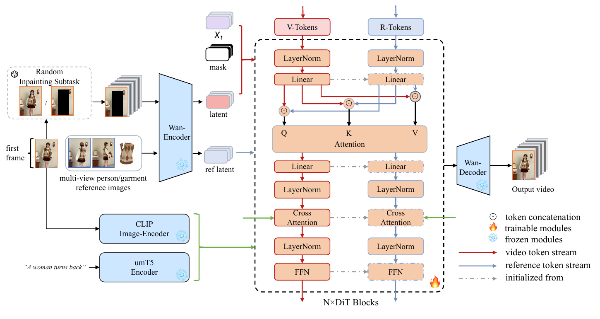
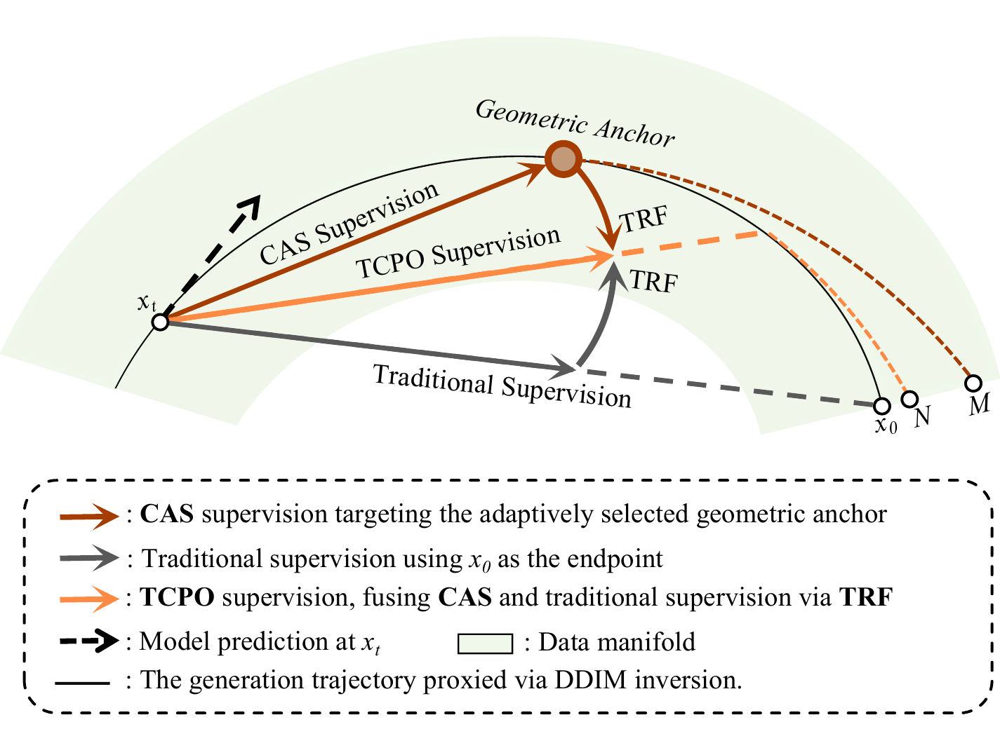
ECCV 2026
Beyond Linear Shortcuts: Rectifying Diffusion Preference Optimization with Intrinsic Generative Geometry
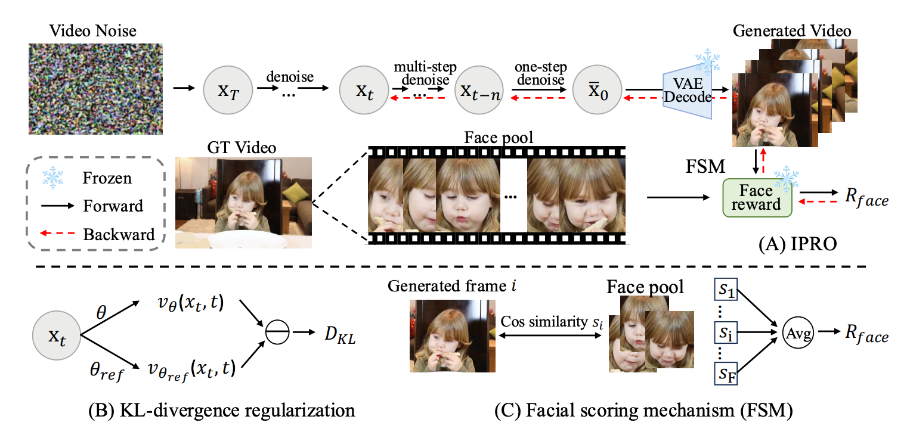
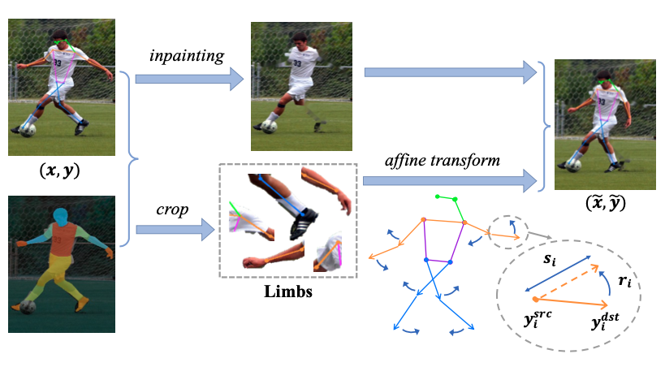
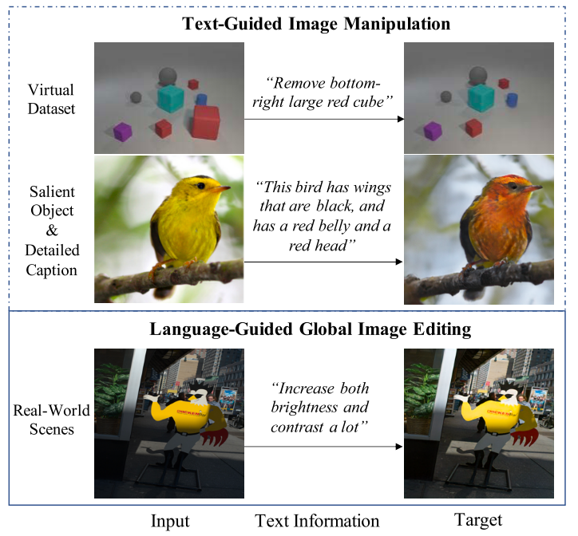
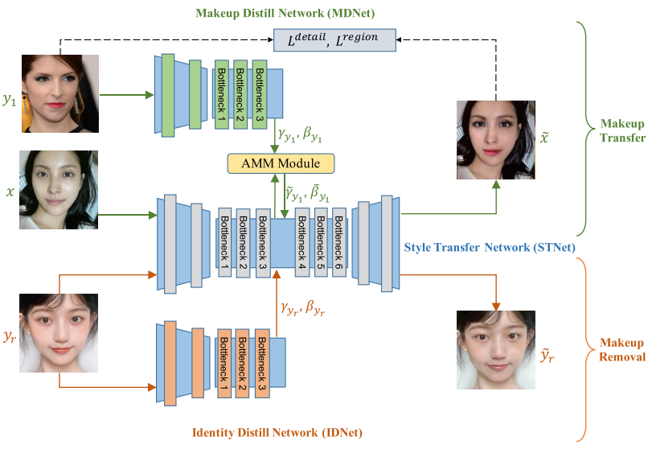
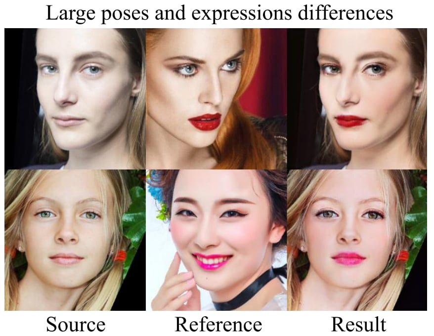
CVPR 2020
Oral
PSGAN: Pose & Expression Robust Spatial-Aware GAN for Customizable Makeup Transfer
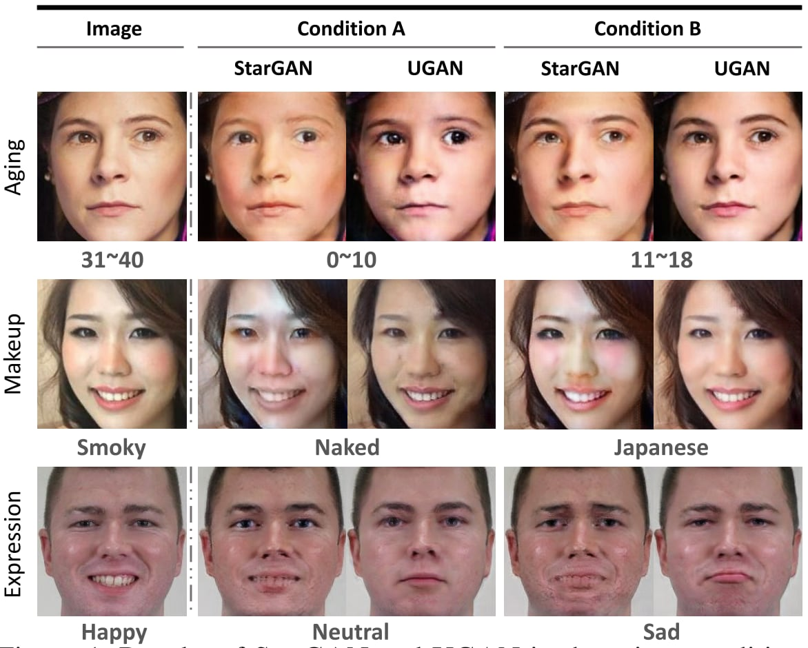
Others
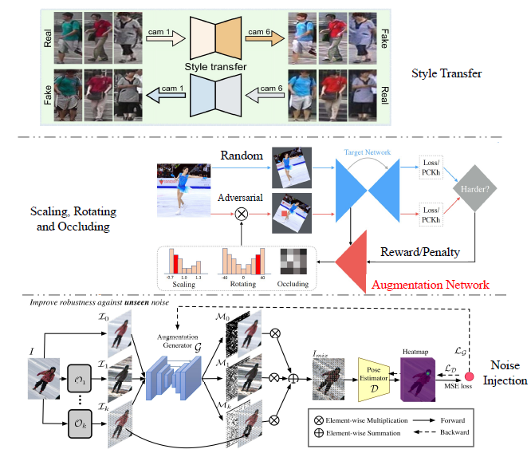
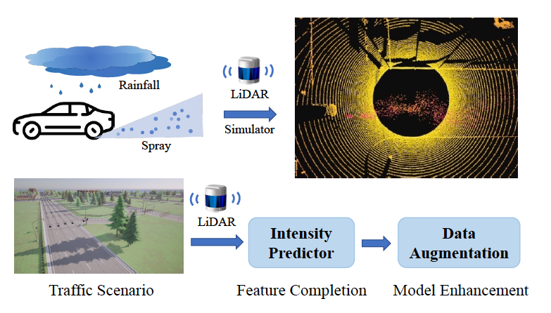
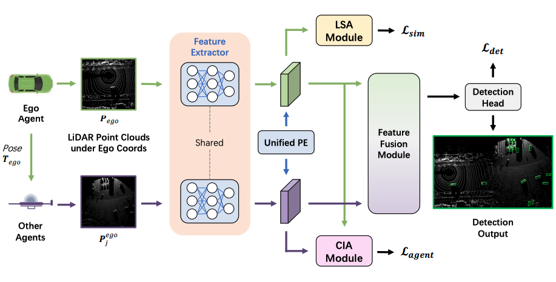
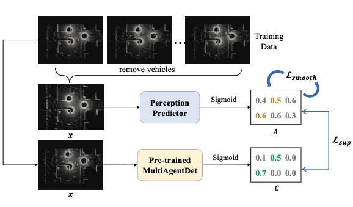
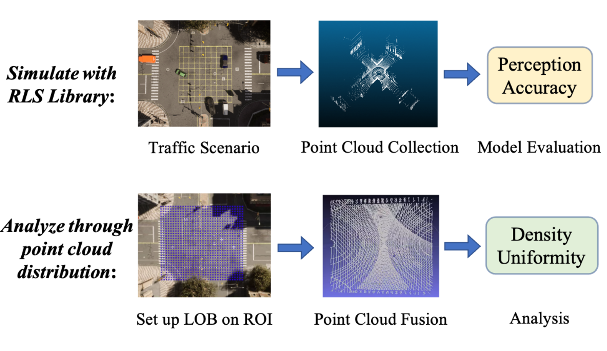
Honors
Awards and recognition.
- 2021 National Scholarship, Top 1%
- 2020 Outstanding Freshman Scholarship for PhD Students, Beihang University, Top 5%
- 2019 Outstanding Freshman Scholarship for Master Students, Beihang University, Top 5%
- 2017 National Scholarship, Top 1%
- 2017 ACM-ICPC Asia Regional Contest, Silver Medal
- 2016-2017 China Collegiate Programming Contest, 3x Silver Medal